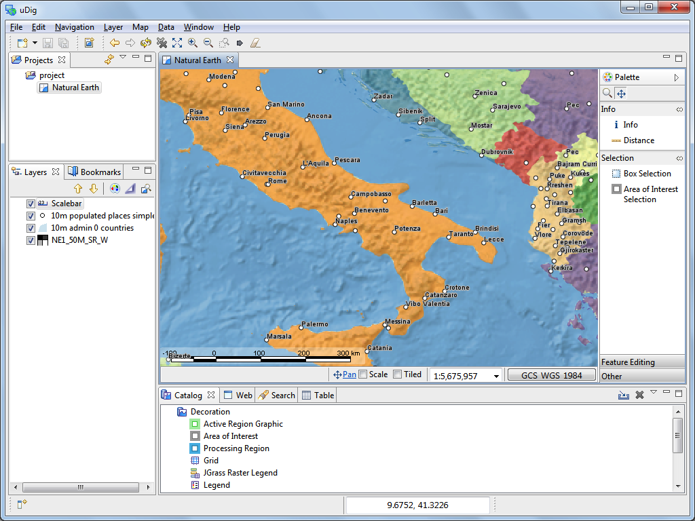

The User-friendly Desktop Internet GIS is an open source (EPL and BSD) desktop application framework, built with the Eclipse Rich Client (RCP) technology.
The help documentation is included in the uDig stand-alone application; and also included in RCP applications that make use of uDig technology.
The term workbench refers to the desktop window that is displayed. The workbench contains editors and views allowing you to interact with spatial information.
You can change what views and editors are displayed by changing “perspectives”. Each perspective defines an arrangement of views and editors allowing you to focus on one problem or activity.
Out of the box uDig includes:
Related concepts